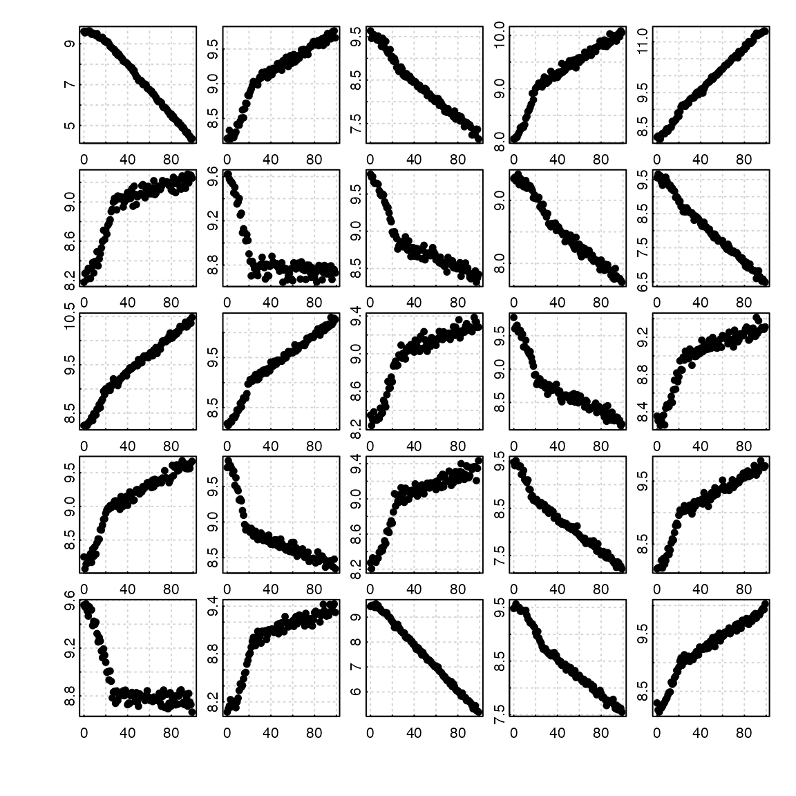
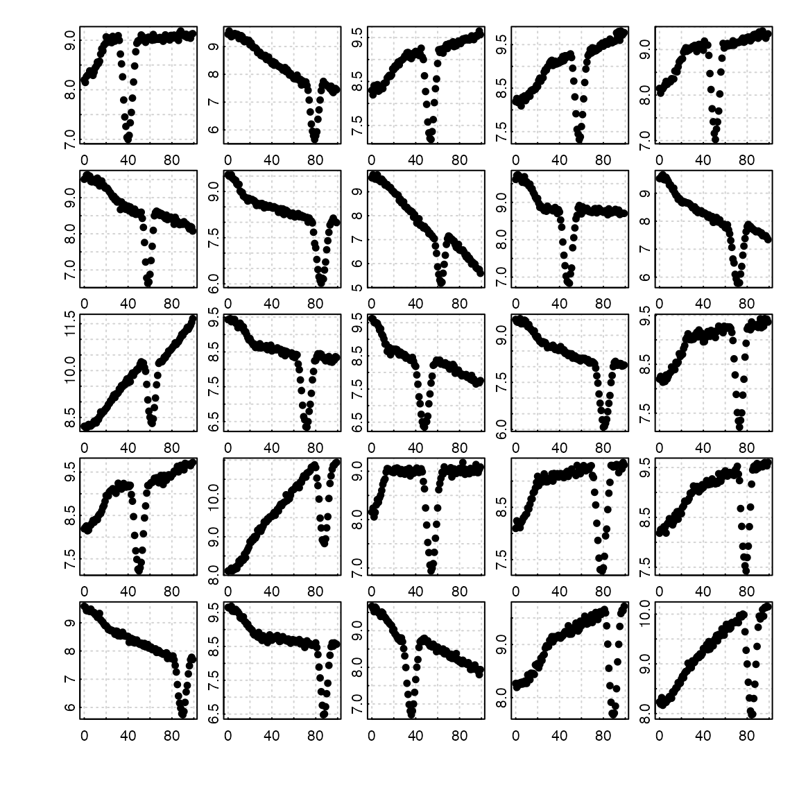
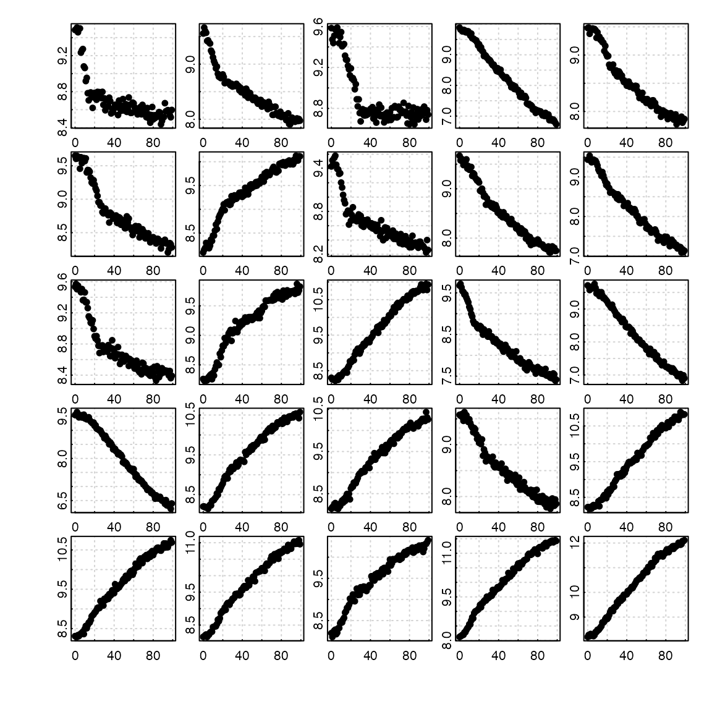
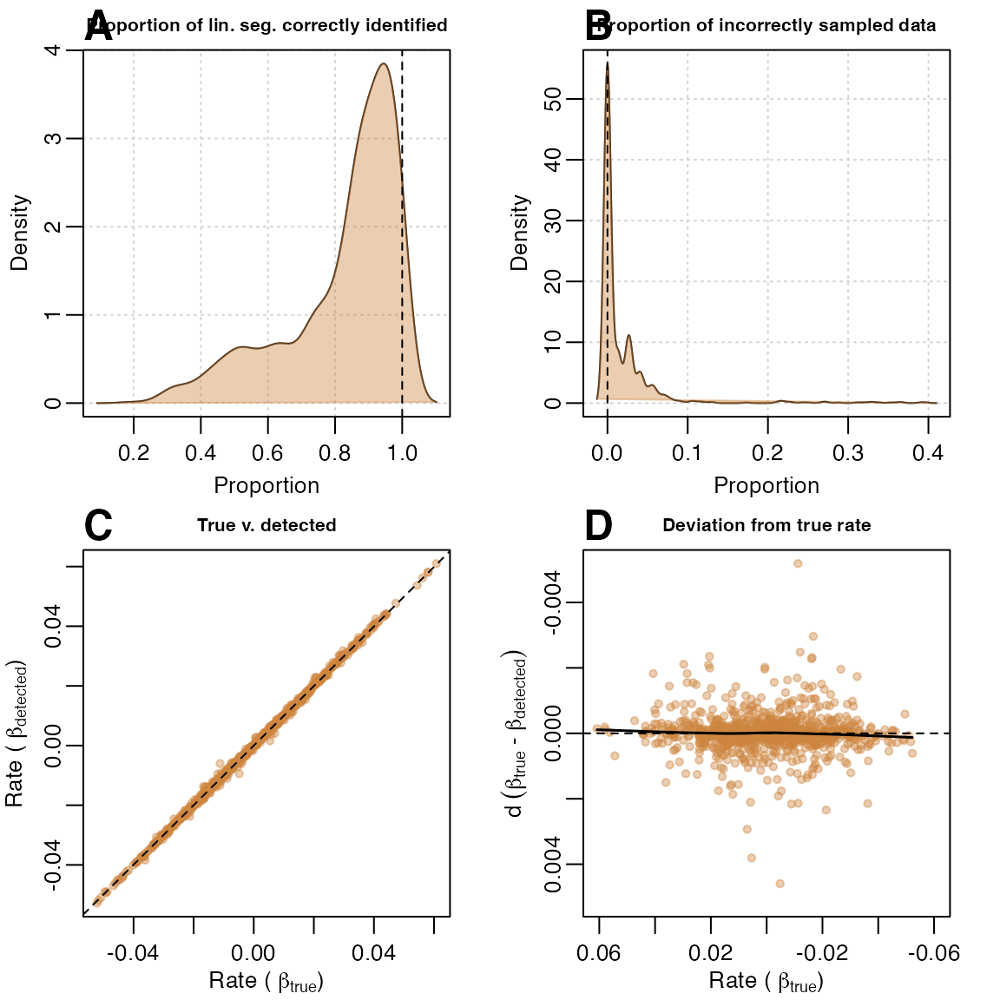
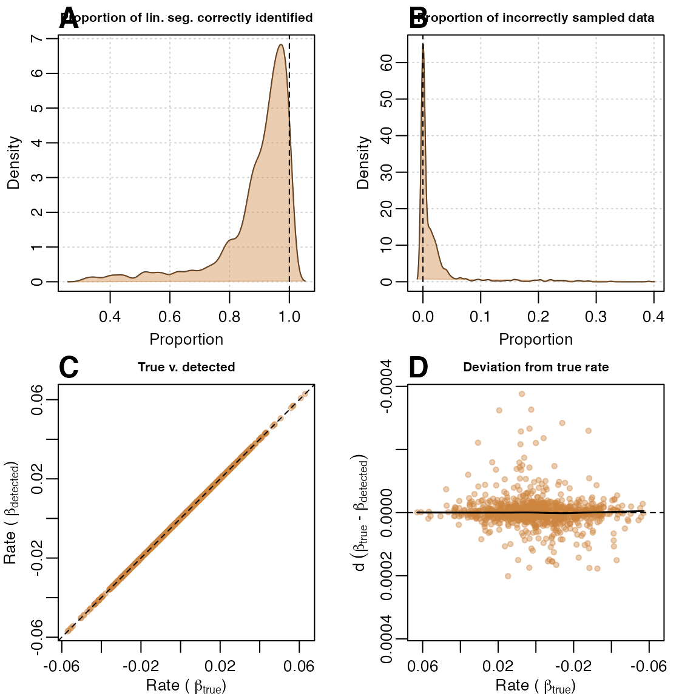
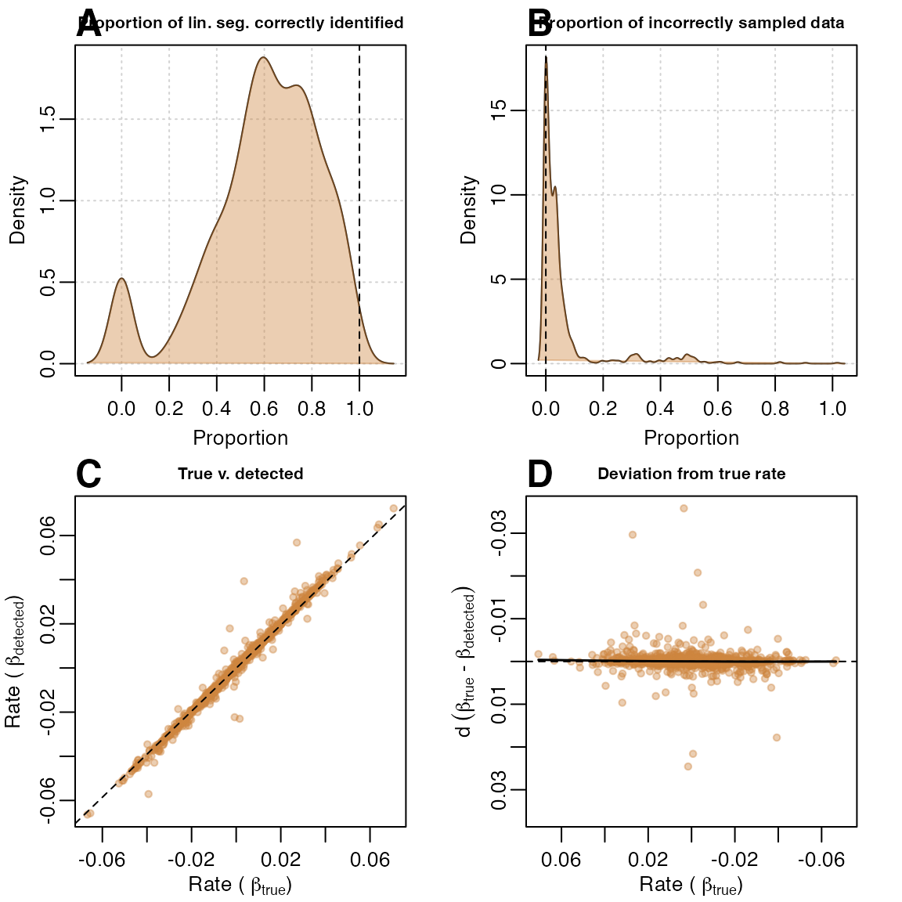
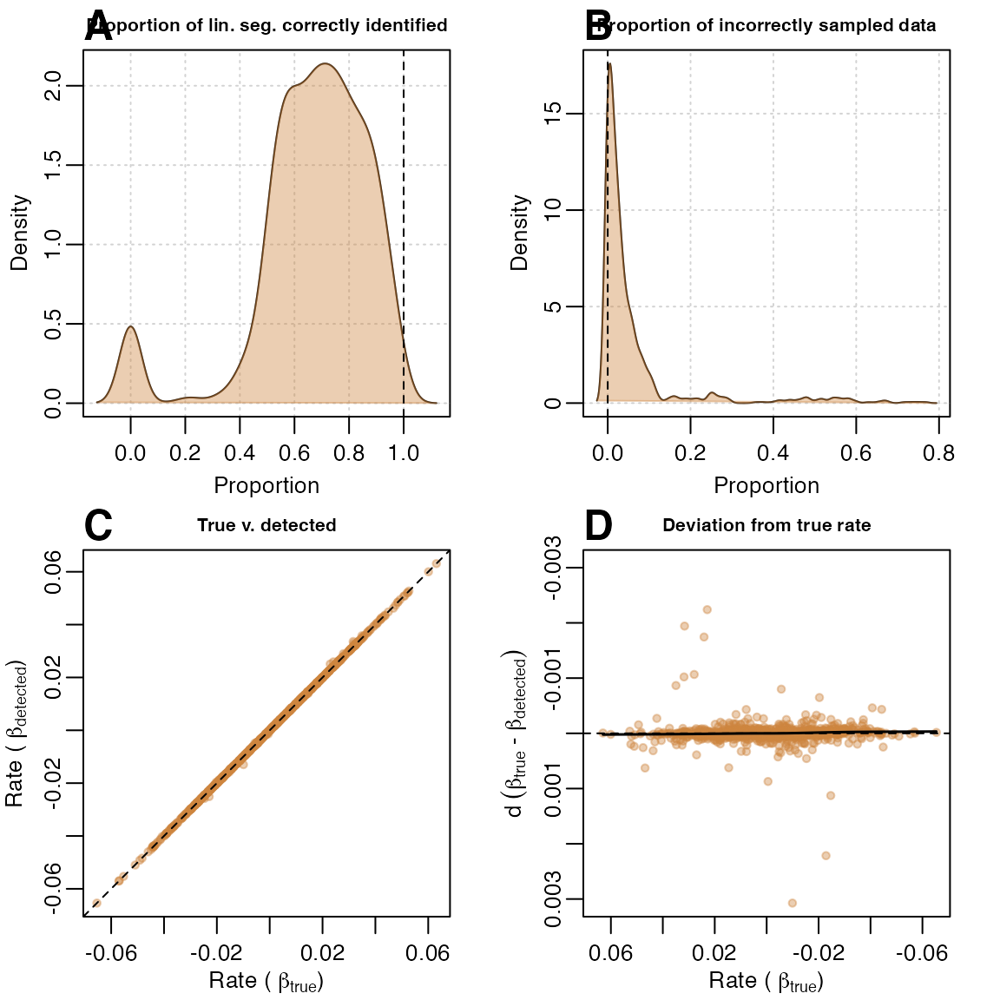
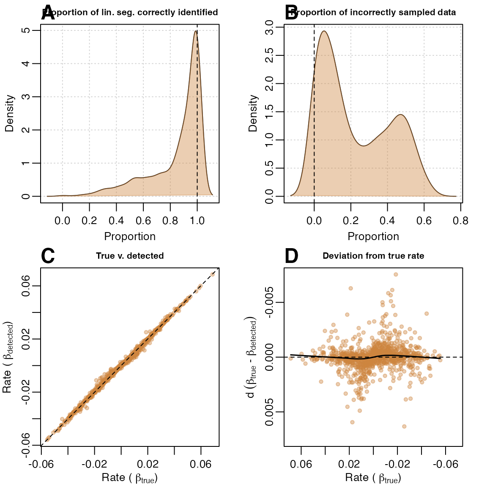
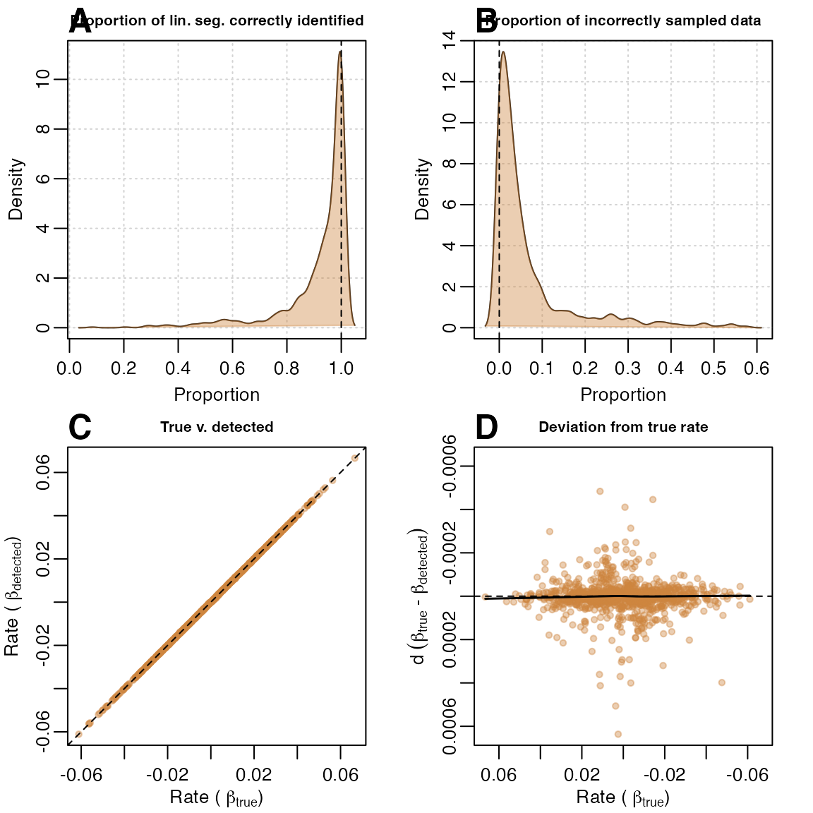

vignettes/auto_rate_performance.Rmd
auto_rate_performance.RmdThe function auto_rate uses rolling regression and kernel density estimation techniques to automatically detect the most linear regions in respirometry data. The dimensionless nature of the function, however, also allows it to be applied to any serial data.
To our knowledge, the methods we use here are novel, and not reported in past publications involving linear data detection and analysis of biological data. Olito et al. (2016) describes a different, though robust, method to detect and rank linear segments in data using their R package, LoLinR. A comparison of auto_rate and LoLinR’s methods are shown here.
The performance tests that we present here are limited but comprehensive, and provide a starting point in generating the data necessary for users to make informed decisions on using and further testing auto_rate for their own purposes. Users should be aware that noisy, strongly fluctuating data could cause unpredictable, unwanted results to be returned. For example, while we have had generally good results with our own data, intermittent flow respirometry data where O2 is fluctuating up and down between periods of use by the specimens and flushing the respirometry chamber are likely to confuse the algorithms. Users should always examine the outputs of auto_rate (and indeed other functions in respR) to understand where returned results occur within the data and that they are representative of the question of interest. We have made this as easy as possible, and designed the package specifically to not be a ‘black box’ and at every stage make the user aware of what is going on through plotting results and their locations in the context of the entire datasets, and in the console outputs.
To ensure that auto_rate performs as intended, we created two internal functions designed to test the accuracy of our KDE techniques to detect linear data. The first function, sim_data(), generates a random dataset which contains both linear and non-linear segments. The second function, test_lin(), specifically performs auto_rate repeatedly on randomly generated data and aggregates the performance metrics obtained to assess and visualise the accuracy of the KDE technique. Both functions are published with the respR package, thus anyone can use them – as we show below – or run them with their own input paramters.
sim_data() is used to randomly generate three kinds of data based on the method argument, which we briefly describe below. It accepts inputs to customise the length of the data (no. of samples), the type of data (described below), the degree of noise as specified by the standard deviation of the data (default 0.05), and a preview toggle to plot and visualise the simulated dataset.
A non-linear segment is first generated using a sine or cosine function with a random length of floor(abs(rnorm(1, .25*len, .05*len))), where len is the total number of observations in the data defined in the function argument, and a random amplitude of rnorm(1, .8, .05). This data segment is appended to a linear segment with a randomly-generated slope computed using rnorm(1, 0, 0.02). The shape of the dataset is designed to mimic common respirometry data whereby the initial sections of the data are often non-linear. Here we show 25 randomly-generated plots created by the method:

sim_data(method = "corrupted")
Same as "default", but “corrupted” data is inserted randomly at any point in the linear segment. The data corruption is depicted by a sudden dip in the reading, which recovers. This event mimics equipment interference that does not necessarily invalidate the dataset if the corrupted section is omitted from analysis. The dip is generated by a cosine function of fixed amplitude of 1, and the length is randomly generated using floor(rnorm(1, .25 * len_x, .02 * len_x)), where len_x is the length of the linear segment.
Thus, to detect the valid linear segment, auto_rate will need to omit the initial non-linear segment, ignore the dip, and then pick the longer of the 2 remaining linear segments that are separated by the dip. Here we show 25 randomly-generated plots created by the method:

sim_data(method = "segmented")
Same as "default", but the data is modified to contain two linear segments. The slope of the second linear segment is randomly chosen at approximately 0.5\(\times\) to 0.6\(\times\) of the first linear segment (i.e the slope is always a magnitude smaller than the first linear segment).
Thus, to detect the correct linear segment, auto_rate would need to correctly omit the initial non-linear segment, and also, ignore the end segment of the data as it has a different slope. Here we show 25 randomly-generated plots created by the method:

To quantify the performance and accuracy of auto_rate’s linear detection technique, the function test_lin() runs the linear detection technique (method = "linear") iteratively and extracts specific output parameter for analysis. The parameters include:
From the above data, we can generate four kinds of performance metrics for visualisation:
We performed test_lin() with 1,000 iterations, for all of the three kinds of data produced by sim_data() ("default", "corrupted", and "segmented"). To check performance on different data lengths, we repeated the tests using 100, 200 and 500 data points. The output of our performance test is avaliable from within the package as a data object called test_lin_data.
# NOTE: Functions take some time to run
# Test on data of length 100 samples -------------------------------------------
# This performs 1,000 iterations of auto_rate on a "default"-type data
set.seed(123)
default100 <- test_lin(reps = 1000, len = 100, type = "default")
# This performs 1,000 iterations of auto_rate on a "corrupted"-type data
set.seed(456)
corrupted100 <- test_lin(reps = 1000, len = 100, type = "corrupted")
# This performs 1,000 iterations of auto_rate on a "segmented"-type data
set.seed(789)
segmented100 <- test_lin(reps = 1000, len = 100, type = "segmented")
# Test on data of length 200 samples -------------------------------------------
# This performs 1,000 iterations of auto_rate on a "default"-type data
set.seed(123)
default200 <- test_lin(reps = 1000, len = 200, type = "default")
# This performs 1,000 iterations of auto_rate on a "corrupted"-type data
set.seed(456)
corrupted200 <- test_lin(reps = 1000, len = 200, type = "corrupted")
# This performs 1,000 iterations of auto_rate on a "segmented"-type data
set.seed(789)
segmented200 <- test_lin(reps = 1000, len = 200, type = "segmented")
# Test on data of length 500 samples -------------------------------------------
# This performs 1,000 iterations of auto_rate on a "default"-type data
set.seed(123)
default500 <- test_lin(reps = 1000, len = 500, type = "default")
# This performs 100 iterations of auto_rate on a "corrupted"-type data
set.seed(456)
corrupted500 <- test_lin(reps = 1000, len = 500, type = "corrupted")
# This performs 100 iterations of auto_rate on a "segmented"-type data
set.seed(789)
segmented500 <- test_lin(reps = 1000, len = 500, type = "segmented")test_lin() can perform tests in a very cool and visual way – at the cost of speed. The argument plot, when set to TRUE, can show us exactly the detected segments at every iteration. Try it!
# Try this code below. WARNING: Will run and plot visuals 20 times.
x <- test_lin(reps = 20, len = 500, type = "segmented", plot = TRUE)Results were very encouraging; when run on data with 100 samples, (A) auto_rate correctly detected a large proportion of the true segment in general, and (B) incorrectly sampled only a small amount of other data. (C) Comparison of \(\beta_{detected}\) against \(\beta_{true}\) showed very stable detection across all slopes, even when slope values approached zero. This was evident in (D) where roughly, the maximum \(\beta_{detected}\) values had \(\pm 0.004\) deviation from the \(\beta_{detected}\) values across all values of \(\pm 0.06\), even for values close to zero:
plot(test_lin_data$default100)
Tests on larger sample data sizes of 200 and 500 revealed that auto_rate performed better when provided with bigger data. When used on data with 500 samples, auto_rate generally (A) detected a larger proportion of the true data and (B) was less prone to sampling incorrect portions of the data. (C) Linear regression had a \(R^2\) of 0.999, and (D) deviation was 10\(\times\) smaller than when sample size was at 100:
plot(test_lin_data$default500)
In this challenging data scenario auto_rate had a tendency to under-sample the linear segment. As this particular type of data consisted of two linear segments separated by a “dip”, the function also sometimes (A) detected the shorter segment as the top-ranked result, resulting in the correct estimate of \(\beta_{true}\), but the wrong linear segment detected. Thus, the function may incorrectly sample none of the linear segment (B), but only rarely; in most cases, it still identified the right segment, and incorrectly sampled only a small amount of data. (C) Comparison of \(\beta_{detected}\) against \(\beta_{true}\) showed stable, but relatively noisy detection of the true rate across all slopes when compared to its performance with “default”-type data. (D) The deviation plot showed that performance was genrally poorer at values close to zero.
plot(test_lin_data$corrupted100)
Again, auto_rate performed better when provided with bigger data. At 500 samples the same issue where the shorter linear segment was incorrectly selected still persisted (A), but (B) the function sampled incorrect segments less often, (C) linear regression of \(\beta_{detected}\) against \(\beta_{true}\) had a better goodness of fit and (D) deviation values from \(\beta_{true}\) were substantially smaller with seemingly fewer poor estimates when slope values approach zero.
plot(test_lin_data$corrupted500)
This type of data is the most difficult to handle as auto_rate needed to disregard the curved, but increasingly-linear top portion of the data, and also discard the slight degree of change in slope towards the end of the data. Thus, auto_rate performed well in many cases, but poorly in others. In the majority of cases, (A) when it managed to sample the linear segment, it did so for a very large fraction of the data. (B) It performed less well at avoiding incorrect sampling, since it sometimes selected the other linear segment. However, (C) the plot of \(\beta_{detected}\) against \(\beta_{true}\) showed that it still performed surprisingly well most of the time, despite the errors, and (D) the deviance from the true rate appeared to be poorer when slope values are closer to zero.
plot(test_lin_data$segmented100)
Again, with a larger dataset, auto_rate’s performance was substantially better. With a 500-sample dataset, many of the issues that occured in the previous test were better resolved. The function (A) correctly sampled the right segment most of the time, and rarely sampled other data or the other linear segment (B). (C) Linear regression of \(\beta_{detected}\) against \(\beta_{true}\) had a \(R^2\) of 0.999, and (D) deviations from \(\beta_{true}\) were much smaller in magnitude.
plot(test_lin_data$segmented500)
We did not report any of the results for 200-sample size datasets, but users are free to call the data object test_lin_data and plot the results, or run their own analyses using the functions we provide.
In this limited testing on relatively small datasets, we have shown that on datasets of around 100 records in length auto_rate performs quite well, although with some occurences of data mischaracterisation. However, when datasets are around 500 in length its performance is radically improved. This pattern holds across our three test data types characteristic of respirometry data: "default" (non-linear to linear data segments), "corrupted" (data with an obvious erroneous drop-out), and "segmented" (non-linear to multiple linear segments). The use of auto_rate on datasets larger than this is likely to be even more accurate in identifying valid linear regions of data.
Despite the overall good perfomance, this does serve to illustrate that users should always inspect and explore their data, and the results of analyses for obvious errors and that the results are characteristic and valid answers to the question they are asking of the data. We have this made this as straightforward as possible in respR through always outputting by default plots with results highlighted in the context of the entire datasets, and useful summary output in the console. There is also extensive support for exploring data and results via the base R plot(), print() and summary() functions.
Olito, C., White, C. R., Marshall, D. J., & Barneche, D. R. (2017). Estimating monotonic rates from biological data using local linear regression. The Journal of Experimental Biology, jeb.148775-jeb.148775. http://doi.org/10.1242/jeb.148775